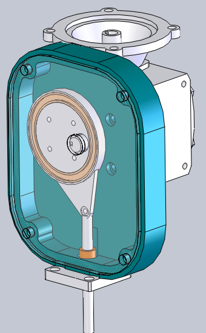
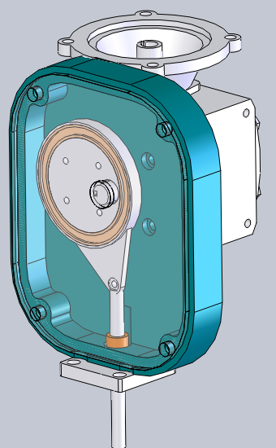

My name is Brendan O'Grady and I am a Mechanical Engineer with a passion for designing and creating. I have a Bachelors and Masters Degree in Mechanical Engineering from the University of Dayton. During graduate school I was a contract worker for the Air Force Research Labs at Wright-Patterson Air Force Base where I did research on morphing wing mechanisms. I also spent time working on spherical mechanisms in grad school.
For the past four years I have been working as a design engineer for Cummins Inc., working on diesel engines. During my time at Cummins I have worked on geartrain components, castings and housings, valvetrains and camshafts. At Cummins I have been using Analysis Led Design tools throughout the product design procedure and have also performed a lot of structural analysis, thermal analysis and dynamic analysis.
In addition to the professional work I have done, I also get involved in many engineering projects to learn new skills and expand my engineering knowledge. These areas unclude composites work, electronics and computer science.
Mechanical Design
Valvetrain Work
Valvetrain work includes cam design, working with GT Suite to do dynamic analysis. Responsible for running a valvetrain test rig, analyzing data using Matlab and using results to correlate dynamic model.
Geartrain Work
Redesign of a geartrain accessory drive idler gear to include a tappered roller bearing. This allowed higher output torque of the drive while making the system more durable.
Bolted Joint Design and Analysis
Correct capscrew number and size as well as assembly procedure is important for ensuring the integrity of fastened components. For issues found in systems where the simplified calculations are not sufficient a more detailed bolted joint analysis is performed using Ansys and the forces and moments acting on the capscrews in a system. All of the work done both calculations and further analysis are based on the bolted joint standard VDI-2230.

Failure Analysis
During system testing a failure showed up. Using a failure analysis process narrowed down likely cause and proved based on vibration data and modal analysis to show that system was being excited and with a simple support failure mode was eliminated.

Casting Design
Solid modeling of castings which required input from manufacturing for casting and machining. Setup finite element analysis for housings to be analyzed with correct loading for the application.


Thermal Analysis
Thermal analyis of system to determine if a heat shield is required to maintain reliability on a cover that does not normally see higher temperatures.

Graduate Thesis
Test Rig
The test setup consisted of the wing mechanism with disctrete connection points for the actuator placement and flexible spars. The test setup was actuated by pneumatic cylinders that were supplied air by pressure regulators controlled by LabView. LabView was also used for all of the sensor integration. The sensors included and LVDT to measure the stroke of the pnuematic cylinders, in-line load cells to measure the force applied and a potentiometer used as a rotary encoder to measure the angular position of the wing mechanism.

Computer Model
MSC adams was used for the dynamic simulation of the wing mechanism, initially a model of the wing was built then the model was parameterized and MATLAB/Simulink was used to update the model based on parameter changes as well as execute the model as part of a larger optimization script. Since the main research topic was investigating actuator placement as flexibility changes, NASTRAN was also used to iterate through changes in link flexibility to input the modal frequencies into the ADAMS model.
Electronics Projects
Circuit Design
As part of a laser distance sensor project, designed the break out board circuit for the CMOS line-scan sensor. The board schematic was designed made in EaglePCB software as well as the board routing. The challenge was to create as small of a footprint as possible.


Hobby Robotics
Both electronics and computer science have always been an interest of mine. Hobby robotics projects have helped me learn more about electronics, microcontrollers, motor control and computer science concepts. For the two wheeled robot a raspberry pi was used to provide the brains of controlling the robot and an arduino to control the motors and distance sensors, with serial communication between the two.
Composites
Bicycle Frame
Mountain bike frame made as a carbon vacuum infusion. Base frame was shaped in foam on a jig made of extruded aluminum. Carbon layers chosen to meet the structure needed to support mountain biking loads. Successful vacuum infusion of a part with complex geometry.


Surfboard
Surfboard designed to work in both freshwater and saltwater, shaped in foam and make with fiberglass and vinylester resin.


Supermileage Vehicle
As part of a collegiate event, designed and built a supermileage vehicle to compete in the SAE Supermileage Competition. Vehicle was designed in solidwords, scale models were tested in a wind tunnel. The vehicle body was shaped in foam and made out of fiberglass with a structural core vacuum infused was the structure.

Cad Modeling
Solid modeling experience in both Proe/Creo and Solidworks.


 
